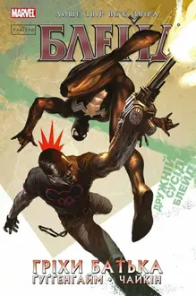
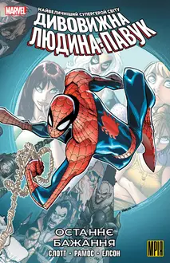
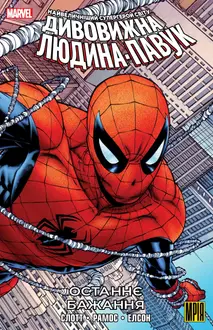
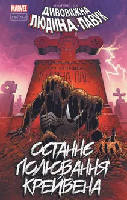
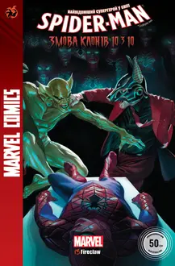
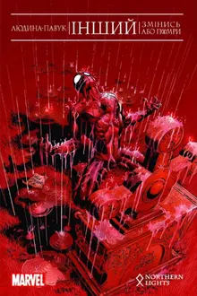
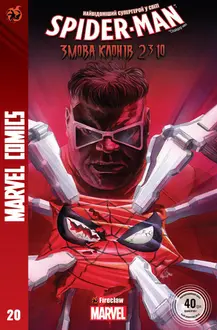
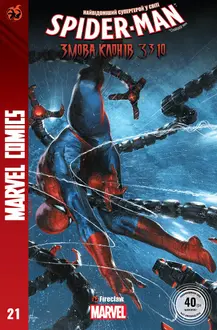

Неперевершена Людина-Павук. Том 1. Мій Особистий Ворог 1

Блейд. Том 2. Гріхи батька

Дивовижна Людина-Павук. Останнє Бажання

Дивовижна Людина-Павук. Останнє Бажання. Альтернативна обкладинка

Дивовижна Людина-Павук: Останнє полювання Крейвена

Spider-Man #28

Людина-Павук: Інший. Змінись або помри

Spider-Man #20

Spider-Man #21